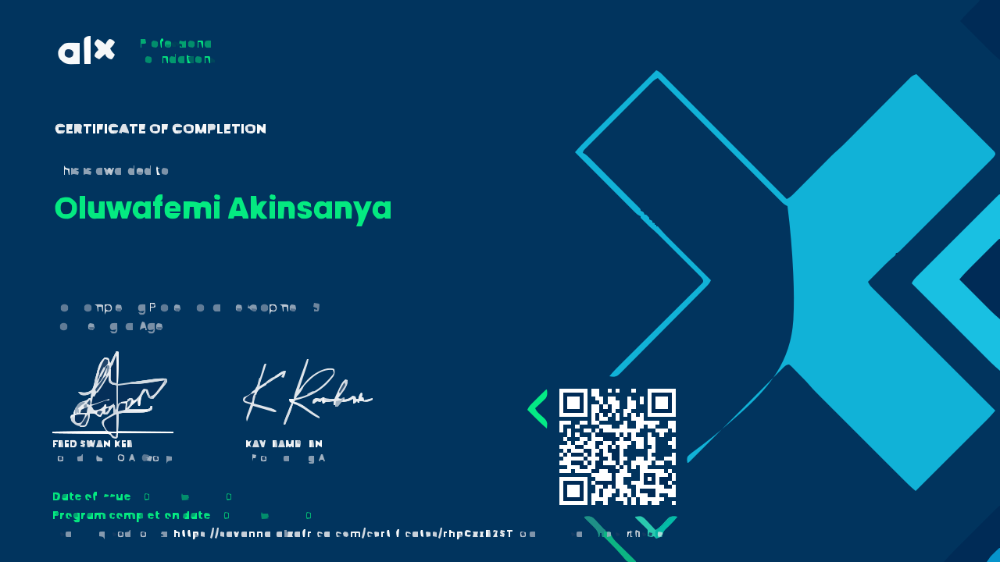

Professional Foundations Certificate
•
Issuer: ALX

About This Certification
The ALX Professional Foundations Certificate is a comprehensive program that validates essential professional competencies and soft skills crucial for success in the modern workplace. This certification demonstrates mastery of key professional development areas including communication, problem-solving, and collaborative work.
Key Skills & Competencies
- Professional Communication
- Written communication excellence
- Effective presentation skills
- Business correspondence
- Technical documentation
- Problem-Solving & Critical Thinking
- Analytical reasoning
- Strategic problem approach
- Decision-making processes
- Team Collaboration
- Cross-functional team work
- Project coordination
- Conflict resolution
Program Focus Areas
- Professional Development
- Career planning and growth strategies
- Personal branding
- Professional networking
- Leadership Skills
- Team leadership principles
- Project management fundamentals
- Decision-making frameworks
- Business Acumen
- Business communication protocols
- Professional ethics
- Industry best practices
Personal Impact
This certification has significantly enhanced my professional capabilities and workplace effectiveness. It has provided me with a strong foundation in essential business and interpersonal skills that complement my technical expertise in cybersecurity.
Practical Applications
I've applied the knowledge and skills from this certification in various ways:
- Developing clear and effective technical documentation
- Leading and contributing to cross-functional team projects
- Presenting complex technical concepts to non-technical stakeholders
- Managing and resolving project challenges effectively
- Building and maintaining professional relationships